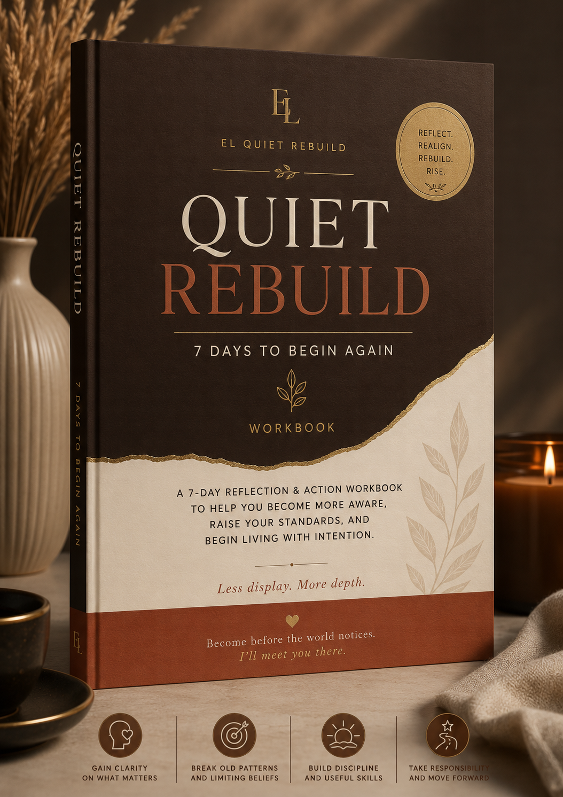

Become Before the World Notices.
A quiet space for women rebuilding their knowledge, confidence, discipline, standards and skills — especially those creating a path beyond traditional education.
Less display. More depth.
Become before the world notices. I'll meet you there.
Choose a Learning Path
You do not have to work on everything at once. Choose an area that reflects what you want to understand, strengthen, practise or rebuild right now.
Communication & Expression
Organise your thoughts, express yourself more clearly, and practise communicating with greater intention.
02Critical Thinking & Knowledge
Question ideas, examine evidence and assumptions, and develop more thoughtful conclusions of your own.
03Confidence & Self-Trust
Strengthen trust in your judgment and build confidence through action, experience and evidence.
04Self-Respect, Standards & Boundaries
Examine what matters to you, what you accept, and the standards you want to practise in your own life.
05Identity & Rebuilding
Recognise what no longer fits and begin rebuilding your beliefs, habits, standards and direction intentionally.
06Habits, Discipline & Action
Turn good intentions into repeated action and learn how to return when consistency is interrupted.
07Money & Financial Thinking
Think more carefully about money, trade-offs, affordability and the decisions shaping your financial life.
08Learning & Skills
Move beyond collecting information and turn learning into practice, capability and evidence of improvement.
09Direction & Purpose
Explore where you want to go without waiting for perfect certainty, and choose a direction you can begin testing through action.
Why This Website Exists
Growth is not always loud. Sometimes it begins quietly—with learning, unlearning, building discipline, developing useful skills, and making better choices one step at a time.
EL Quiet Rebuild is a quiet learning and rebuilding space for women who want to become more knowledgeable, capable, disciplined, confident, and intentional about the lives they are creating.
At the heart of this space are women building beyond traditional educational paths — women who may not have had every opportunity they wanted, but who refuse to believe that learning, growth, skill, confidence, or meaningful work must end there.
But the door is wider than one educational experience. Women at different stages of becoming are welcome here — because there is always something to learn, unlearn, strengthen, or rebuild.
Through thoughtful content, practical resources, books, reflection, self-education, and intentional action, EL Quiet Rebuild is designed to help you do more than feel inspired. It is a place to actually build.
Build your knowledge. Build your standards. Build discipline. Build useful skills. Strengthen your relationship with money. Think more deeply. Make better decisions. And become increasingly capable of creating the life you want.
You do not need to perform your growth here. You do not need to become overnight.
You can build quietly.
Less display. More depth.
Become before the world notices. I'll meet you there.
The EL Quiet Rebuild Framework
LEARN
Build knowledge. Read, study, ask questions and develop the skills and understanding you need to move forward.
THINK
Question what you know. Reflect deeply, examine your beliefs and learn to make thoughtful decisions instead of simply following what you have always known.
REBUILD
Replace what no longer serves you. Rebuild your habits, confidence, standards and direction with greater intention.
APPLY
Turn what you learn into action. Practice your skills, use your knowledge and make deliberate choices that move your life forward.
BECOME
Grow into the person your learning and actions are preparing you to be. Let the change become part of who you are, not simply something you tried.
Resources
A growing collection of books, practical tools, learning resources, and reflection materials to help you keep learning, strengthen your thinking, develop useful skills, and make more intentional decisions.
Books & Reading
Thoughtful books, reading lists, and reflection prompts to help you think more deeply, keep learning, and apply what you read to your own life.
Explore the Reading Room →Money & Mindset
Practical resources for understanding money, building healthier financial habits, thinking long-term, and becoming more intentional about your financial decisions.
View the Money Mindset Guide →Learning & Practice
Practical learning paths and exercises for strengthening communication, critical thinking, confidence, discipline, skills, standards, and direction.
Explore the Learning Paths →FREE RESOURCE
The Quiet Rebuild Check-In
A guided check-in for noticing what needs your attention across money, habits, confidence, standards, skills and direction.
Get the Free Check-InAfter downloading: if the PDF does not open automatically, check your device’s Files or Downloads folder. Your Quiet Rebuild Check-In will be saved there.
EL Quiet Reading Room
A calm space for reading, reflection, and thoughtful conversation.
The EL Quiet Reading Room is where we explore books that help us think more deeply about money, discipline, identity, confidence, habits, standards, personal growth, and the lives we are building.
Expect monthly book picks, quiet reading sessions, reflection prompts, and conversations designed to help you do more than finish a book — but actually apply what you are learning.
Bring your own book, read at your own pace, and rebuild quietly with us.
CURRENTLY READING
The Psychology of Money
Inside the Reading Room
Monthly Book Picks
Thoughtfully selected books for learning, reflection, growth and becoming.
Explore Book Picks →Quiet Reading Sessions
Calm reading sessions where we slow down, focus and read together.
Enter Quiet Reading →Reflection Prompts
Questions that help you think beyond the page and connect what you read to your own life.
Enter Reflection Room →Thoughtful Discussions
Meaningful conversations about the ideas, lessons and perspectives we discover.
Join the Discussion →Shop
Practical digital resources created to support deeper learning, intentional growth, stronger standards, and quiet rebuilding.

Quiet Rebuild: 7 Days to Begin Again
A guided 7-day reflection and action workbook designed to help you recognise where you are, question limiting patterns, strengthen your standards and discipline, take responsibility, and begin moving forward intentionally.
€19.99
Buy NowWhat You'll Explore
- Awareness
- Patterns and beliefs
- Intentional choices
- Standards
- Discipline
- Personal responsibility
- Beginning again
You'll also work through reflection questions, practical exercises, writing prompts, and intentional action steps.
Format: Digital PDF workbook

Money Mindset Guide
A practical guide to help you understand your money habits, think more intentionally about spending and saving, build healthier financial patterns, and make stronger long-term financial decisions.
€12.99
Buy NowInside the Money Mindset Guide, you'll explore money habits, spending, saving, debt, financial boundaries and practical systems for managing money more intentionally.
Contact
Have a question about EL Quiet Rebuild, our guides or resources? You're welcome to reach out. We'd love to hear from you.